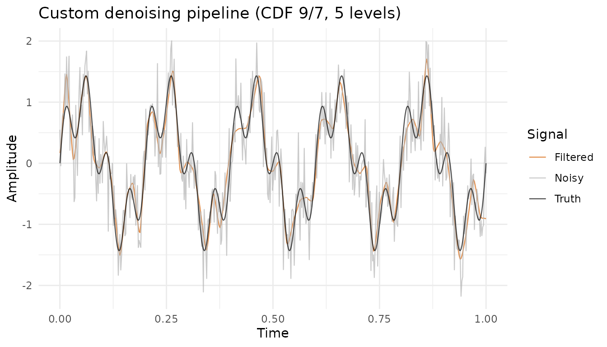
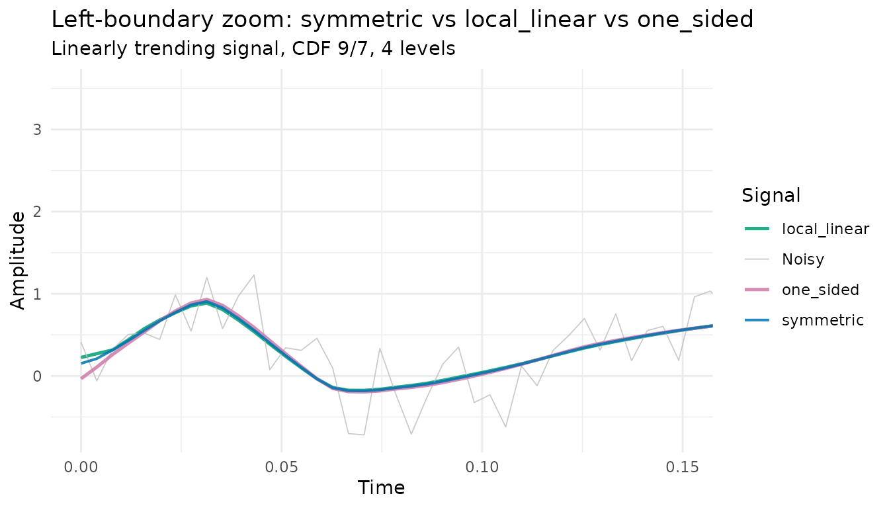
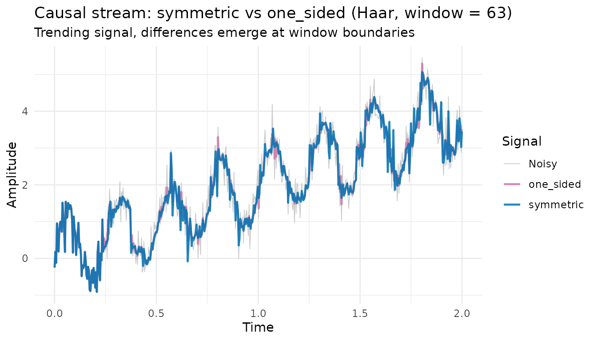
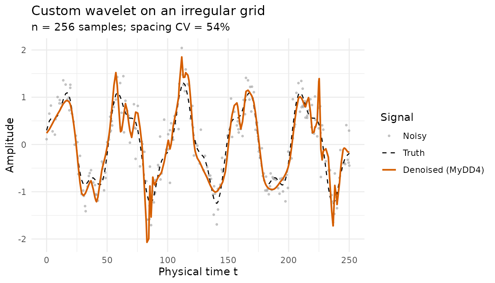
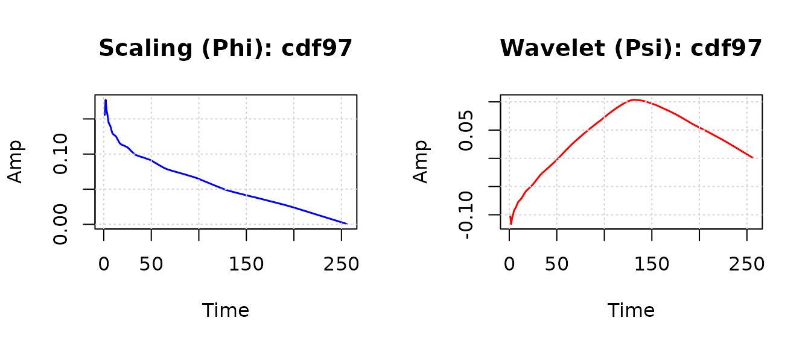

This vignette covers the extensibility of rLifting
beyond the built-in wavelets and standard denoising pipelines: defining
custom wavelets via predict and update steps, validating them with the
diagnose_wavelet suite, and assembling low-level pipelines
with custom logic between decomposition and reconstruction. Thresholding
theory and the empirical decision guide live in
vignette("v02-thresholding-and-tuning"); this vignette uses
the threshold primitives but does not re-derive them.
For the deep dives that this vignette only summarises, see
vignette("v02-thresholding-and-tuning") (empirical
thresholding decision guide), vignette("v03-causal-stream")
(causal-mode mechanics), vignette("v04-boundary-modes")
(per-mode empirical impact), and
vignette("v05-irregular-grids") (irregular-grid
handling).
library(rLifting)
if (!requireNamespace("ggplot2", quietly = TRUE)) {
knitr::opts_chunk$set(eval = FALSE)
message("'ggplot2' is required to render plots. Vignette code will not run.")
} else {
library(ggplot2)
}1. Built-in wavelet families
rLifting ships with six built-in lifting schemes:
| Name | Alias | Steps | Vanishing moments | Properties |
|---|---|---|---|---|
haar |
2 | 1 | Orthogonal; step-like signals; fastest | |
db2 |
3 | 2 | Orthogonal; maximises vanishing moments | |
cdf53 |
bior2.2 |
2 | 2 | Biorthogonal; linear interpolation predict |
cdf97 |
bior4.4 |
4 | 4 | Biorthogonal; JPEG 2000; smoothest output |
dd4 |
interp4 |
2 | 4 | Interpolating; cubic Lagrange predict |
lazy |
0 | 0 | Identity polyphase split only |
Each is constructed via lifting_scheme():
haar = lifting_scheme("haar")
cdf53 = lifting_scheme("cdf53")
cdf97 = lifting_scheme("cdf97")
dd4 = lifting_scheme("dd4")
print(cdf97)
#> Lifting Scheme: cdf97
#> Steps: 4
#> Norm: Approx=1.1496, Detail=0.8699The CDF 9/7 wavelet has four lifting steps (two predict, two update), making it significantly smoother than Haar but with wider filter support. The trade-off between smoothness and locality is fundamental in wavelet analysis.
Irregular-grid support: cdf53 and dd4 have
interpolating predict steps (sum(coeffs) ≈ 1) and activate
Lagrange interpolation at the actual physical positions when
t is supplied. haar works correctly on
irregular grids without any position correction: its nearest-neighbour
predict (degree = 0) captures the local difference
d[i] = x[2i+1] - x[2i] regardless of spacing, so the result
is identical with or without t (position-aware ≡
position-ignoring). db2 and cdf97 have
non-interpolating predict steps and fall back to fixed coefficients on
irregular grids (with a warning). See
vignette("v05-irregular-grids") for details.
For empirical guidance on which wavelet to choose given a signal and
operation mode, see vignette("v01-introduction") Section 3
(regular-grid bench) and vignette("v07-benchmarks") (full
picture).
2. Defining custom wavelets
One of the strengths of the Lifting Scheme is its modularity. Unlike convolution-based implementations, lifting allows you to construct wavelets by composing simple predict and update steps. Each step is defined by:
-
type:"predict"or"update" -
coeffs: a numeric vector of filter coefficients -
start_idx: integer offset for the filter window (or useposition = "center","left", or"right") -
degree: inferred automatically. Ifsum(coeffs) ≈ 1, the step is treated as interpolating and Lagrange correction is applied on irregular grids.
Example: recreating CDF 5/3 manually
The CDF 5/3 wavelet uses linear interpolation for prediction and averaging for update:
p_step = lift_step(
type = "predict",
coeffs = c(0.5, 0.5),
start_idx = 0
)
u_step = lift_step(
type = "update",
coeffs = c(0.25, 0.25),
start_idx = -1
)
my_cdf53 = custom_wavelet(
name = "MyCDF53",
steps = list(p_step, u_step),
norm = c(sqrt(2), 1/sqrt(2))
)
print(my_cdf53)
#> Lifting Scheme: MyCDF53
#> Steps: 2
#> Norm: Approx=1.4142, Detail=0.7071The degree field is inferred automatically: since
sum(c(0.5, 0.5)) = 1, the predict step is recognised as a
linear interpolator (degree = 1). This means
my_cdf53 will automatically use position-aware Lagrange
interpolation when t is supplied, with the same behaviour
as the built-in cdf53.
Using the custom wavelet
Once defined, a custom wavelet works in every function
(lwt, ilwt,
denoise_signal_offline, denoise_signal_causal,
and new_wavelet_stream):
x = 1:16
# local_linear extension preserves the linear trend at the boundary,
# so all detail coefficients vanish for a degree-1 input (2 VM).
fwd = lwt(
x, my_cdf53,
levels = floor(log2(length(x))),
extension = "local_linear"
)
#> Warning in lwt(x, my_cdf53, levels = floor(log2(length(x))), extension =
#> "local_linear"): Residual signal at level 4 has only 1.0 samples.
# CDF 5/3 has 2 VM: detail coefficients are zero for a linear signal
print(round(fwd$coeffs$d1, 10))
#> [1] 0 0 0 0 0 0 0 0
# Perfect reconstruction
rec = ilwt(fwd)
all.equal(as.numeric(x), rec)
#> [1] TRUE3. Diagnosing a wavelet
rLifting includes a diagnostic suite that verifies the
mathematical properties of any lifting scheme. Pass a
config list specifying the expected properties:
config = list(
is_ortho = FALSE, # CDF 5/3 is biorthogonal, not orthogonal
vm_degrees = c(0, 1), # degree 0 = constant, 1 = ramp
max_taps = 5 # expected filter support width
)
diag = diagnose_wavelet(
my_cdf53,
config = config,
plot = FALSE # suppress basis plot
)
#>
#> === DIAGNOSIS: MYCDF53 ===
#> [PASS] Perfect Reconstruction (Stress Test) | Max Error (Global): 1.42e-14
#> [PASS] Orthogonality (Energy Conservation) | Ratio: 1.125305 (Non-Orthogonal) [Exp: FALSE]
#> [PASS] Vanishing Moments (Degree 0) | Residual Energy: 0.00e+00 (Tol: 1.00e-09)
#> [PASS] Vanishing Moments (Degree 1) | Residual Energy: 2.08e-28 (Tol: 1.00e-09)
#> [PASS] Compact Support (FIR) | Active Taps: 5 (Max Expected: 5)
#> [INFO] Shift Sensitivity | Energy Variation (Shift 1): 50.00%The five sub-tests are also exported individually, so they can be invoked in unit tests or in custom workflows that only need a subset:
| Function | What it tests |
|---|---|
validate_perfect_reconstruction |
|
validate_vanishing_moments |
Detail coefficients vanish for polynomials of given degree |
validate_orthogonality |
Energy preservation (Parseval’s theorem) |
validate_compact_support |
Impulse response has finite support |
validate_shift_sensitivity |
Quantifies shift-variance (informational) |
Common failure modes:
- A failed perfect reconstruction usually indicates a sign error in a
predict or update coefficient, an incorrect
start_idxthat shifts the filter window asymmetrically, or a wrong normalization factor. - A failed vanishing-moment test for degree means the predict step does not reproduce polynomials of that degree, typically because the coefficients do not sum to the value required or the filter window is asymmetric in a way that breaks polynomial reproduction.
- A failed orthogonality test is expected for biorthogonal wavelets
(CDF families, DD4); the test passes only when
is_ortho = TRUEis supplied and the energy ratio is close to 1. - A failed compact-support test typically reflects a large
start_idxoffset that pushes the effective filter support wider thanmax_taps + 2.
Typical configs by built-in wavelet:
diagnose_wavelet("haar", list(is_ortho = TRUE, vm_degrees = 0, max_taps = 2))
diagnose_wavelet("db2", list(is_ortho = TRUE, vm_degrees = 0:1, max_taps = 4))
diagnose_wavelet("cdf53", list(is_ortho = FALSE, vm_degrees = 0:1, max_taps = 5))
diagnose_wavelet("dd4", list(is_ortho = FALSE, vm_degrees = 0:3, max_taps = 11))
diagnose_wavelet("cdf97", list(is_ortho = FALSE, vm_degrees = 0:3, max_taps = 12))4. Low-level transform pipeline
For fine-grained control over the denoising flow, the four primitives
at the heart of the high-level functions
(denoise_signal_offline,
denoise_signal_causal, new_wavelet_stream) can
be invoked directly:
-
lwt(x, scheme, levels, ...)— forward lifting wavelet transform, returns anlwtobject holding the detail coefficientsd1, d2, …, dnand the approximationan. -
compute_adaptive_threshold(lwt_obj, alpha, beta)— MAD-based noise estimate plus the recursive per-level threshold (corresponds tothreshold_method = "universal"). -
threshold(x, lambda, method, a)— applies one of the four shrinkage rules ("hard","soft","semisoft","scad") to a vector of coefficients. -
ilwt(lwt_obj)— inverse transform that reuses theextension,ll_k, andtcarried by thelwtobject.
The math behind these primitives lives in
vignette("v02-thresholding-and-tuning"): §3 covers the
universal vs SURE threshold rules, §4 the α/β recursion, §5 the
tune_alpha_beta() tuner, §6 the four shrinkage functions
with bench-grounded recommendations. This vignette focuses on
composing the primitives in non-standard ways.
The example below decomposes a noisy two-frequency signal at five levels, applies a different shrinkage rule per level (semisoft on the finest details, hard on a middle level, no threshold on the coarsest), and reconstructs:
set.seed(42)
n = 512
t_v = seq(0, 1, length.out = n)
pure = sin(2 * pi * 5 * t_v) + 0.5 * sin(2 * pi * 20 * t_v)
noisy = pure + rnorm(n, sd = 0.4)
sch = lifting_scheme("cdf97")
# 1. Forward transform
decomp = lwt(noisy, sch, levels = 5)
# 2. Compute adaptive thresholds
lambdas = compute_adaptive_threshold(decomp, alpha = 0.3, beta = 1.2)
# 3. Custom strategy: semisoft on fine levels, hard on d4; leave d5 untouched
for (lev in 1:3) {
dname = paste0("d", lev)
decomp$coeffs[[dname]] = threshold(
decomp$coeffs[[dname]], lambdas[[dname]], method = "semisoft"
)
}
decomp$coeffs$d4 = threshold(decomp$coeffs$d4, lambdas$d4, method = "hard")
# d5 untouched to preserve coarse structure
# 4. Inverse transform
reconstructed = ilwt(decomp)
df_pipe = data.frame(
t = rep(t_v, 3),
value = c(noisy, pure, reconstructed),
Signal = rep(c("Noisy", "Truth", "Filtered"), each = n)
)
ggplot(df_pipe, aes(x = t, y = value, colour = Signal)) +
geom_line(alpha = 0.7, linewidth = 0.4) +
labs(
title = "Custom denoising pipeline (CDF 9/7, 5 levels)",
x = "Time", y = "Amplitude"
) +
scale_colour_manual(
values = c(
"Noisy" = "grey70", "Truth" = "black",
"Filtered" = "#D55E00"
)
) +
theme_minimal()
Figure 1: Custom denoising pipeline on a synthetic two-frequency signal. The noisy input (grey) is decomposed with CDF 9/7 at 5 levels; details d1–d3 are denoised with semisoft, d4 with hard, and d5 is left untouched to preserve coarse structure. The reconstructed signal (orange) tracks the underlying truth (black) closely.
Note on argument naming: all four shrinkages ("hard",
"soft", "semisoft", "scad") are
supported by both the primitive threshold() and the
top-level denoising functions. Only the argument name differs:
threshold(x, lambda, method = ...) (the primitive’s
original name), versus
denoise_signal_offline(..., shrinkage = ...) and the other
top-level functions (where method is still accepted as a
deprecated alias with a warning). For SCAD, pass the shape parameter as
a (default 3.7) to either form.
5. Boundary extension modes
Every transform function accepts an extension parameter
controlling how the signal is extrapolated when a filter reaches the
edge of available data. Five modes are available:
| Mode | Behaviour | Best for |
|---|---|---|
"symmetric" |
Mirror reflection at the boundary (default) | Smooth signals; general use |
"periodic" |
Wraps signal (assumes periodicity) | Genuinely periodic signals |
"zero" |
Pads with zeros beyond the edge | Signals with compact support |
"local_linear" |
OLS line through ll_k boundary samples
(default 4) |
Trending signals; drifting baselines |
"one_sided" |
Drops out-of-bounds taps; renormalises filter by sum | Causal mode with haar; no assumption
beyond edge |
For the empirical impact in offline mode (boundary choice changes MSE
by at most a few percent) and the wavelet-conditional picture in
causal/stream (one_sided and zero dominate
with haar; symmetric is the safe default with
longer filters), see vignette("v04-boundary-modes"). The
two short subsections below illustrate the two non-default modes that
have user-facing parameters or constraints.
local_linear: k-point extrapolation
"local_linear" fits an ordinary least-squares line
through the ll_k nearest boundary samples and extrapolates.
The default ll_k = 4 is more robust than 2-point slope
estimation when boundary samples are noisy.
# Compare 2-point vs 4-point extrapolation on a noisy boundary
res_k2 = denoise_signal_offline(
noisy, sch,
extension = "local_linear", ll_k = 2L
)
res_k4 = denoise_signal_offline(
noisy, sch,
extension = "local_linear", ll_k = 4L
)If ll_k exceeds the signal length, it is clamped to
n with a warning.
one_sided: filter renormalisation
"one_sided" does not extend the signal at all. Instead,
it drops out-of-bounds filter taps and renormalises the remaining
coefficients by their sum. The filter changes shape near boundaries
rather than relying on virtual signal values, which is the only mode
with this behaviour.
set.seed(42)
n_bnd = 256
t_bnd = seq(0, 1, length.out = n_bnd)
trend = 3 * t_bnd
sig_b = trend + 0.3 * rnorm(n_bnd) + 0.5 * sin(2 * pi * 8 * t_bnd)
sch_b = lifting_scheme("cdf97")
res_sym = denoise_signal_offline(
sig_b, sch_b, levels = 4,
extension = "symmetric"
)
res_ll = denoise_signal_offline(
sig_b, sch_b, levels = 4,
extension = "local_linear"
)
res_os = denoise_signal_offline(
sig_b, sch_b, levels = 4,
extension = "one_sided"
)
df_bnd = data.frame(
t = rep(t_bnd, 4),
value = c(sig_b, res_sym, res_ll, res_os),
Signal = rep(
c("Noisy", "symmetric", "local_linear", "one_sided"),
each = n_bnd
)
)
ggplot(df_bnd, aes(x = t, y = value, colour = Signal, linewidth = Signal)) +
geom_line(alpha = 0.85) +
scale_linewidth_manual(
values = c(
"Noisy" = 0.3, "symmetric" = 0.7, "local_linear" = 0.9, "one_sided" = 0.9
)
) +
scale_colour_manual(values = c(
"Noisy" = "grey75",
"symmetric" = "#0072B2",
"local_linear" = "#009E73",
"one_sided" = "#CC79A7"
)) +
coord_cartesian(xlim = c(0, 0.15)) +
labs(
title = "Left-boundary zoom: symmetric vs local_linear vs one_sided",
subtitle = "Linearly trending signal, CDF 9/7, 4 levels",
x = "Time", y = "Amplitude"
) +
theme_minimal()
Figure 2: Left-boundary zoom of an offline denoising on a trending signal (3·t + noise + sinusoid) using CDF 9/7 at 4 levels. symmetric (blue) and local_linear (green) reflect or extrapolate the boundary; one_sided (pink) uses only existing samples. On a smooth trending signal in offline mode all three are visually similar; differences become important in causal mode.
one_sided is incompatible with irregular grids: when
extension = "one_sided" and t is supplied,
one_sided takes priority in C++ and Lagrange interpolation
is not applied. A warning is raised at the R level.
Causal stream: symmetric vs one_sided
In causal and stream modes, both edges of the sliding window are
virtual, and the boundary choice affects every filtered output rather
than just the edge samples. For the recommended causal default
(haar), one_sided makes no assumption about
samples beyond the window and consistently outperforms
symmetric on the regular-grid benchmark; the full
per-wavelet comparison lives in
vignette("v04-boundary-modes") Section 5.
set.seed(1)
n_c = 512
t_c = seq(0, 2, length.out = n_c)
x_c = 2 * t_c + 0.4 * rnorm(n_c) + sin(2 * pi * 4 * t_c)
sch_c = lifting_scheme("haar")
proc_sym = new_wavelet_stream(
sch_c, window_size = 63, levels = 3,
extension = "symmetric"
)
proc_os = new_wavelet_stream(
sch_c, window_size = 63, levels = 3,
extension = "one_sided"
)
out_sym = out_os = numeric(n_c)
for (i in seq_len(n_c)) {
out_sym[i] = proc_sym(x_c[i])
out_os[i] = proc_os(x_c[i])
}
df_c = data.frame(
t = rep(t_c, 3),
value = c(x_c, out_sym, out_os),
Signal = rep(c("Noisy", "symmetric", "one_sided"), each = n_c)
)
ggplot(df_c, aes(x = t, y = value, colour = Signal, linewidth = Signal)) +
geom_line(alpha = 0.85) +
scale_linewidth_manual(
values = c("Noisy" = 0.3, "symmetric" = 0.8, "one_sided" = 0.8)
) +
scale_colour_manual(
values = c(
"Noisy" = "grey75",
"symmetric" = "#0072B2",
"one_sided" = "#CC79A7"
)
) +
labs(
title = "Causal stream: symmetric vs one_sided (Haar, window = 63)",
subtitle = "Trending signal, differences emerge at window boundaries",
x = "Time", y = "Amplitude"
) +
theme_minimal()
Figure 3: Causal-stream denoising of a trending signal with sinusoidal component (Haar, window = 63). symmetric (blue) reflects the most recent sample inward at each step; one_sided (pink) renormalises the filter against the available window. Both follow the trend; the differences emerge in regions where the filter window contains a transition.
For the full mechanics of causal and stream modes (warm-up,
window_size, update_freq, latency), see
vignette("v03-causal-stream").
6. Irregular grids and custom wavelets
Custom wavelets natively support irregular grids when predict steps
have sum(coeffs) ≈ 1. The degree field is
inferred automatically in lift_step. The example below
defines a 4-point cubic interpolating custom wavelet (structurally
similar to the built-in dd4) and applies it to a smooth
signal sampled on a non-uniform grid:
# 4-point cubic interpolating predict (sum = 1 -> degree = 3)
p_cubic = lift_step(
"predict",
coeffs = c(-1/16, 9/16, 9/16, -1/16),
start_idx = -1
)
u_cubic = lift_step(
"update",
coeffs = c(-1/32, 9/32, 9/32, -1/32),
start_idx = -1
)
my_dd4 = custom_wavelet(
"MyDD4", list(p_cubic, u_cubic), c(sqrt(2), 1/sqrt(2))
)
# Confirm the degree was inferred correctly (3 means cubic Lagrange)
my_dd4$steps[[1]]$degree
#> [1] 3
set.seed(20260523)
n_irr = 256
# Irregular grid: cumulative spacing with high variance
t_irr = cumsum(c(0, abs(rnorm(n_irr - 1, mean = 1, sd = 0.6))))
# Smooth underlying signal
pure_irr = sin(t_irr / 8) + 0.3 * cos(t_irr / 3)
noisy_irr = pure_irr + rnorm(n_irr, sd = 0.3)
# Denoise using the custom wavelet on the irregular grid
clean_irr = denoise_signal_offline(
noisy_irr, my_dd4,
levels = 4, t = t_irr,
shrinkage = "semisoft", alpha = 0.3, beta = 1.2
)
df_irr = data.frame(
t = rep(t_irr, 3),
value = c(noisy_irr, pure_irr, clean_irr),
Signal = factor(
rep(c("Noisy", "Truth", "Denoised (MyDD4)"), each = n_irr),
levels = c("Noisy", "Truth", "Denoised (MyDD4)")
)
)
ggplot(df_irr, aes(x = t, y = value, colour = Signal)) +
geom_point(
data = subset(df_irr, Signal == "Noisy"),
size = 0.6, alpha = 0.5
) +
geom_line(
data = subset(df_irr, Signal == "Truth"),
linewidth = 0.5, linetype = "dashed"
) +
geom_line(
data = subset(df_irr, Signal == "Denoised (MyDD4)"),
linewidth = 0.8
) +
scale_colour_manual(values = c(
"Noisy" = "grey60",
"Truth" = "black",
"Denoised (MyDD4)" = "#D55E00"
)) +
theme_minimal() +
labs(
title = "Custom wavelet on an irregular grid",
subtitle = sprintf(
"n = %d samples; spacing CV = %.0f%%",
n_irr, 100 * sd(diff(t_irr)) / mean(diff(t_irr))
),
x = "Physical time t", y = "Amplitude"
)
Figure 4: Custom 4-point cubic wavelet applied to a smooth signal on an
irregular grid. The noisy input (grey dots) is sampled at non-uniform
time positions drawn from a log-normal-ish process; the underlying
signal (black dashed) is recovered by
denoise_signal_offline with the custom wavelet and
t = t_irr (orange). The predict step uses Lagrange
interpolation evaluated at each sample’s physical position rather than
fixed coefficients.
The Lagrange path is activated automatically because the predict
step’s degree was inferred as 3 (cubic) from
sum(c(-1/16, 9/16, 9/16, -1/16)) = 1. No additional
configuration is needed in the user code; the same
denoise_signal_offline call would work with the built-in
dd4 or cdf53 on the same irregular grid. Note
that haar (degree = 0) needs no position
correction: its nearest-neighbour predict captures
d[i] = x[2i+1] - x[2i] regardless of spacing, so the output
is identical with or without t — this is correct behaviour,
not a limitation.
Non-interpolating predict steps (sum ≠ 1) fall back to
fixed coefficients when t is supplied. This is the correct
behaviour for orthogonal wavelets like db2, whose predict
steps are designed for regular spacing; the package issues a warning so
the user knows the irregular path was not activated.
The full discussion of irregular-grid mechanics, wavelet eligibility,
and per-mode behaviour lives in
vignette("v05-irregular-grids"), with empirical
recommendations grounded in
data(benchmark_rlifting_irregular).
7. Visualizing wavelet basis functions
plot(scheme) renders the scaling function
()
and wavelet function
()
by cascade iteration of the lifting steps:
plot(lifting_scheme("cdf97"))
Figure 5: Scaling and wavelet basis functions of CDF 9/7 obtained by cascade iteration of the lifting steps. Useful for verifying that a custom wavelet produces reasonable basis functions and for diagnosing coefficient specification errors.
visualize_wavelet_basis(scheme, plot = TRUE) is the
standalone function that plot.lifting_scheme dispatches to;
call it directly when finer control over the cascade depth or plot
output is needed.
Summary
rLifting is designed to be both high-performance and
extensible:
- Six built-in wavelets cover common use cases.
cdf53anddd4adapt to irregular grids;cdf97is the smoothest;haaris the fastest and the recommended default for causal/stream mode. - Custom wavelets via
lift_step()pluscustom_wavelet()work in every function;degreeis inferred automatically for irregular-grid support. - Diagnostic suite validates perfect reconstruction, vanishing
moments, orthogonality, compact support, and shift sensitivity, both via
the wrapper
diagnose_wavelet()and via the five standalonevalidate_*functions. - Low-level API (
lwt,ilwt,compute_adaptive_threshold,threshold) for fully custom pipelines that interleave bespoke logic between decomposition and reconstruction. Threshold mathematics and the empirical decision guide live invignette("v02-thresholding-and-tuning"). - Five boundary modes with mode-specific trade-offs and
wavelet-conditional empirical impact
(
vignette("v04-boundary-modes"));one_sidedis especially suited for causal/stream mode with short filters (haar) at regular grids;local_linear’sll_kis the only numeric tunable. - Irregular-grid support via the
tvector activates Lagrange interpolation forcdf53(linear) anddd4(cubic).haarworks correctly on irregular grids without position correction — its nearest-neighbour predict is spacing-agnostic by design, so the output is identical with or withoutt.db2andcdf97fall back to fixed coefficients with a warning.
References
Antoniadis, A., & Fan, J. (2001). Regularization of wavelet approximations. Journal of the American Statistical Association, 96(455), 939–967.
Donoho, D. L., & Johnstone, I. M. (1994). Ideal spatial adaptation by wavelet shrinkage. Biometrika, 81(3), 425–455.
Liu, Z., Mi, Y., & Mao, Y. (2014). Improved real-time denoising method based on lifting wavelet transform. Measurement Science Review, 14(3), 152–159. DOI: 10.2478/msr-2014-0020.
Sweldens, W. (1996). The lifting scheme: A custom-design construction of biorthogonal wavelets. Applied and Computational Harmonic Analysis, 3(2), 186–200.